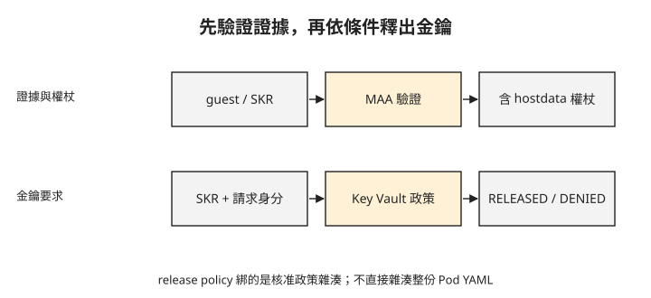

Day 8：兩個 Pod 都 Running，為什麼只有一個拿得到金鑰？¶

假設你負責一把解密金鑰，要交給跑在別人節點上的程式使用。Day 7 已經讓 kata-cc Pod 在 SEV-SNP 機密硬體上啟動，Pod 帶著自己的安全政策。但 Running 只說明平台把它跑起來了，沒有告訴你裡面跑的是不是你核准的那份工作負載。工作負載身分只回答「誰在向 Azure 發請求」，回答不了 Pod 裡跑的是哪一份政策。
這一章在金鑰上加一道條件：要金鑰的 Pod 得先證明自己跑的是哪一份安全政策，政策對得上才給。這章用兩個都能 Running 的 Pod 做對照，一個用核准的政策，另一個只多一個環境變數、重新產生政策，再看金鑰服務對兩者的回應。
讀完之後，遇到 Pod Running 卻拿不到金鑰，你會知道要比對哪兩個值，也知道拒絕還可能來自哪些地方。
開始之前¶
你需要 Day 7 的 kata-cc 叢集，包括 cc-lab namespace、已啟用的 OIDC issuer 與 workload identity，以及在 Podman 的 Linux 容器裡產生政策的做法。這章的指令會在 Azure 建立 Key Vault Premium、MAA 與 managed identity，這幾個名詞下面會逐一說明。
這章練的是設定金鑰的釋出條件，並看懂釋出與拒絕兩個結果。consumer Pod 的 manifest 和回報結果的狀態服務沒有附上，最後兩節只能做結果判讀；要自己部署，consumer 的寫法可以從 AKS 機密容器部署 的 consumer.yaml 改起。
金鑰放在哪裡、誰來檢查¶
金鑰放在 Key Vault，這是 Azure 管理金鑰、秘密與憑證的服務。Pod 要取用金鑰時，會透過同一個 Pod 裡的 SKR（Secure Key Release）sidecar：它負責取得執行環境的證明，再帶著證明向 Key Vault 要金鑰。
證明由 MAA（Microsoft Azure Attestation）檢查。SKR 把機密硬體產生的報告交給 MAA，MAA 驗過之後簽發一份權杖，權杖裡的每一項已簽署屬性叫做 claim。
Key Vault 拿到權杖後，照金鑰上的 release policy（金鑰釋出政策）判斷：權杖要來自哪個 MAA、哪些 claim 必須等於什麼值。這份政策跟 Day 7 那份限制 guest agent 操作的安全政策用途不同，前者管金鑰給誰，後者管 Pod 裡能做什麼。
下面這張圖把流程分成兩排。上排是證據怎麼變成權杖，下排是拿權杖要金鑰：

從圖上可以看到兩件事：
- 上排的終點是一份帶 hostdata 的權杖。hostdata 是什麼、為什麼關鍵，算政策雜湊那一節會講。
- 下排的 Key Vault 同時看兩樣東西：請求者的身分有沒有權限，以及權杖是否符合 release policy。工作負載身分回答「誰在向 Azure 發請求」，證明回答「這個執行環境是不是金鑰持有者要的那一個」，兩項都要過。
建立 Key Vault、MAA 與工作負載身分¶
這一節要準備三樣資源。managed identity（受控識別）是由 Azure 管理認證資訊的身分，Pod 用它向 Azure 服務證明自己是誰，程式裡不必存密碼。Key Vault 選 Premium，因為要用 HSM（硬體安全模組）保護的金鑰，HSM 在硬體裡儲存金鑰、執行密碼運算。
先建立三項資源。<rg>、<kv>、<maa>、<mid> 換成你的資源群組與三項資源的名稱，名稱要符合 Azure 的命名規則：
# Key Vault Premium(HSM 金鑰)、MAA 證明服務、managed identity
az keyvault create -g <rg> -n <kv> --sku premium --enable-rbac-authorization true
az attestation create -g <rg> -n <maa> -l westeurope
az identity create -g <rg> -n <mid>
接下來的聯合身分與角色指派，要用到四個建立後才有的值：叢集的 OIDC issuer URL、managed identity 的 clientId 與 principalId，以及 Key Vault 的完整資源 ID。後面寫 release policy 還要 MAA 的 attestation URI。先把它們查出來存進變數，名稱填剛才用的，CLUSTER 填 Day 7 的叢集名稱。Workload Identity 官方文件要求 Azure CLI 2.47.0 以上。
依官方文件整理，未實跑
來源：Workload Identity 部署、az identity show、az keyvault show、AKS 機密容器部署（attestUri 查詢）
RG='<rg>'
CLUSTER='<aks-cluster-name>'
MID='<mid>'
KV='<kv>'
MAA='<maa>'
export OIDC_ISSUER=$(az aks show -g "$RG" -n "$CLUSTER" \
--query oidcIssuerProfile.issuerUrl -o tsv)
export MID_CLIENT_ID=$(az identity show -g "$RG" -n "$MID" \
--query clientId -o tsv)
export MID_PRINCIPAL_ID=$(az identity show -g "$RG" -n "$MID" \
--query principalId -o tsv)
export KV_ID=$(az keyvault show -g "$RG" -n "$KV" \
--query id -o tsv)
export MAA_URI=$(az attestation show -g "$RG" -n "$MAA" \
--query attestUri -o tsv)
KV_ID 是 Vault 的資源 ID，官方範例也是用 az keyvault show --query id 取得角色指派的 --scope；金鑰 ID 和 Vault URL 不能拿來代替。
有了這些值，就可以把 Kubernetes 的 ServiceAccount 和 managed identity 接起來。聯合身分（federated credential）告訴 Azure：叢集 OIDC issuer 簽給 cc-lab/skr-sa 的權杖，可以換成這個 managed identity 的身分。接著建立 ServiceAccount，並在 annotation 寫上 managed identity 的 clientId。最後給 managed identity Key Vault 的兩個角色。
修正版未重跑
和下方原指令差在 --identity-name、-g、--issuer、client-id、--assignee-object-id、--scope 改從上一段的變數帶入。
az identity federated-credential create --name skr-fic --identity-name "$MID" -g "$RG" \
--issuer "$OIDC_ISSUER" --subject "system:serviceaccount:cc-lab:skr-sa" \
--audience api://AzureADTokenExchange
kubectl create sa skr-sa -n cc-lab
kubectl annotate sa skr-sa -n cc-lab azure.workload.identity/client-id="$MID_CLIENT_ID"
az role assignment create --role "Key Vault Crypto Officer" --assignee-object-id "$MID_PRINCIPAL_ID" --scope "$KV_ID"
az role assignment create --role "Key Vault Crypto User" --assignee-object-id "$MID_PRINCIPAL_ID" --scope "$KV_ID"
下面是修正前的寫法，以佔位符代替上面那幾個變數。照上面的區塊打就不必再執行這一段：
# workload identity:managed identity ↔ 叢集 OIDC ↔ k8s service account
az identity federated-credential create --name skr-fic --identity-name <mid> -g <rg> \
--issuer "<叢集 OIDC issuer>" --subject "system:serviceaccount:cc-lab:skr-sa" \
--audience api://AzureADTokenExchange
kubectl create sa skr-sa -n cc-lab
kubectl annotate sa skr-sa -n cc-lab azure.workload.identity/client-id=<mid client id>
# 給 managed identity Key Vault 的密鑰角色
az role assignment create --role "Key Vault Crypto Officer" --assignee-object-id <mid principal> --scope <kv id>
az role assignment create --role "Key Vault Crypto User" --assignee-object-id <mid principal> --scope <kv id>
這條身分路徑只對指定 skr-sa 的 Pod 有效。consumer Pod 要寫 serviceAccountName: skr-sa，並依 workload identity 的要求啟用注入；官方範例的做法是在 Pod 加上 azure.workload.identity/use: "true" 標籤。
這裡讓同一個 managed identity 同時拿兩個角色。Crypto Officer 帶金鑰管理權限，Crypto User 用來使用金鑰。正式環境要把管理金鑰的人和只需要求釋出的工作負載分開指派，各自只給需要的權限。
產生 consumer 的政策，算出它的雜湊¶
consumer Pod 裡有兩個容器：你的 app 和 SKR sidecar（mcr.microsoft.com/aci/skr:2.7）。manifest 要寫好這幾項，再依 Day 7 的方式產生政策，存成 consumer-policy.yaml：
runtimeClassName: kata-cc-isolation與serviceAccountName: skr-sa。- app 呼叫 SKR 的
/key/release，帶上 MAA endpoint、Key Vault endpoint 與金鑰 ID，請求格式見 SKR API。 - app 把結果（
RELEASED或DENIED）用nc -l掛在一個 TCP 埠，再配一個 Service，從叢集內用 ClusterIP 讀。kata-cc 的預設政策不允許kubectl exec和logs，所以結果要由 app 主動提供，見疑難排解。
release policy 要比對的值叫 hostdata，是 SNP 硬體報告裡用來綁定安全政策雜湊的欄位。雜湊用的是 SHA-256：它把一段內容轉成固定 64 位十六進位的摘要，內容改了一個位元組，摘要通常就會不同。要注意雜湊的對象是解碼後的政策內容，不是整份 Pod YAML。
政策產生工具會把政策以 base64 放進 manifest 的 io.katacontainers.config.agent.policy annotation。下面在本機把它取出、解碼，再算雜湊。如果你照 Day 7 在 Podman 容器裡產生政策，雜湊要改在本機算，原因見疑難排解：
# 政策注入 consumer manifest 後,在 macOS 本機算:
POLICY_B64=$(grep 'agent.policy:' consumer-policy.yaml | sed 's/.*policy: //')
printf '%s' "$POLICY_B64" | base64 -d | shasum -a 256
# → ca8442bb3d17f7d85556b5c21682db11f2313cdbe3db1adcd27c89c3f88e720d
# → 後面那串是這份政策的雜湊。你的 manifest 跟這裡不同，算出來的值也會不同，下一節要綁到金鑰上的是你自己的值。
grep 和 sed 這兩段假設 annotation 寫在同一行、值沒有加引號。格式不符時 POLICY_B64 會是空的，shasum 照樣印出一個值，看起來像成功。所以算之前先確認 POLICY_B64 有內容，解碼後是完整的政策文字。
把核准的雜湊綁到金鑰¶
release policy 寫三個條件：權杖要由你的 MAA 簽發（authority），證明類型是 SEV-SNP 機密 VM（x-ms-attestation-type 等於 sevsnpvm），hostdata 等於上一步算出的雜湊（x-ms-sevsnpvm-hostdata）。下面直接用變數寫出 release-policy.json，HOSTDATA 沿用上一步的 POLICY_B64 取完整的 64 位雜湊：
修正版未重跑
和下方原 JSON 差在 authority 改用 $MAA_URI、hostdata 改用完整雜湊 $HOSTDATA，並用 heredoc 直接寫成檔案。
HOSTDATA=$(printf '%s' "$POLICY_B64" | base64 -d | shasum -a 256 | cut -d' ' -f1)
cat > release-policy.json <<EOF
{
"version": "1.0.0",
"anyOf": [{
"authority": "$MAA_URI",
"allOf": [
{ "claim": "x-ms-attestation-type", "equals": "sevsnpvm" },
{ "claim": "x-ms-sevsnpvm-hostdata", "equals": "$HOSTDATA" }
]
}]
}
EOF
下面是修正前的寫法，結構相同：
只保留關鍵片段
authority 用佔位符、hostdata 縮寫成 ca8442bb…720d，不能直接存成檔案使用；完整語法見 Key Vault 金鑰釋出政策語法。
{
"version": "1.0.0",
"anyOf": [{
"authority": "https://<maa>.weu.attest.azure.net",
"allOf": [
{ "claim": "x-ms-attestation-type", "equals": "sevsnpvm" },
{ "claim": "x-ms-sevsnpvm-hostdata", "equals": "ca8442bb…720d" }
]
}]
}
接著建立帶這份 release policy 的 HSM 金鑰。--exportable true 讓金鑰可以依 release policy 匯出，這是金鑰能交到合格 Pod 手上的前提。az keyvault key create 的說明寫明：要建立帶 release policy 的金鑰，exportable 必須是 true，呼叫者也要有 export 權限。
az keyvault key create --vault-name <kv> -n skr-key --kty RSA-HSM --size 3072 \
--exportable true --policy release-policy.json
金鑰現在綁定核准政策的雜湊。下一節做拒絕測試時，這份 release policy 保持不動，兩個 Pod 要的是同一把金鑰、同一組條件。
讀懂核准版本的結果¶
用核准政策部署 consumer Pod 和它的狀態 Service 後，Pod 裡的 app 向 SKR 要金鑰，從叢集內讀狀態 Service 就能看到結果。狀態 Service 的回應內容只能有狀態，不能包含金鑰。<service> 是狀態 Service 的位址。下面的註解先交代這一次請求經過哪些服務，最後一行才是讀到的結果：
# app 內部:curl SKR → SKR 取 SEV-SNP report → MAA 簽 token(hostdata=ca8442bb…)
# → workload identity 呼叫 Key Vault → release policy 相符 → 放金鑰
$ curl http://<service>/ → RELEASED
註解裡的 hostdata=ca8442bb… 是 MAA 權杖裡 hostdata 的值，它跟上一節綁進 release policy 的雜湊開頭相同；最後一行是 RELEASED。RELEASED 是 app 自己整理後回報的，只說明金鑰釋出成功，裡面沒有 SNP 報告或 MAA 權杖的原文。要檢查權杖裡的 claim，得另外取出 MAA 權杖來解析，權杖格式見 MAA 概觀。
改一個環境變數，讀懂拒絕的結果¶
複製原 manifest，在 app 加一個環境變數 TAMPER=yes，然後對變更後的 manifest 重新產生政策。這一步不能省。這個測試要的是一個能正常啟動、只是不在金鑰核准範圍內的 Pod。如果只改 Pod、沿用舊政策，Pod 可能在啟動時就被 guest agent 擋下，那測到的就變成 Day 7 的啟動政策，金鑰釋出條件根本沒有走到。
重新產生的政策雜湊：
# 篡改版的政策 hash:
a07958c9891de4f177cf6f1bf207b75d1c6ee78250f8064b968308e730c912b0
# ≠ 金鑰綁定的 ca8442bb…720d
開頭從 ca8442bb 變成 a07958c9，只多一個環境變數，政策雜湊就不同了。把變更版部署成另一個 Pod 和狀態 Service，向同一把金鑰要求釋出。金鑰的 release policy 還是綁原本的雜湊。
確認變更版 Pod 的狀態，skr-tampered 在 cc-lab namespace：
修正版未重跑
和下方原指令差在多了 -n cc-lab。
下面是修正前的寫法跑出的結果，連同讀狀態服務的結果：
只保留關鍵片段
兩行都只留指令與結果，省略了 kubectl get pod 的完整欄位和狀態 Service 的實際位址（<tampered-service>），不能直接執行。
看兩個地方。2/2 Running 表示兩個容器都起來了，變更版符合它自己的啟動政策；DENIED 表示它沒拿到金鑰。這組對照的設計是金鑰條件不動、只換政策，所以兩個 Pod 都能啟動，金鑰卻只給了核准的那一個。
DENIED 這個字串本身不帶原因。自己部署時，只看到 DENIED，還要區分是權限、證明服務、網路還是 release policy 哪一層拒絕。SKR 釋出成功時的回應裡就有金鑰（格式見 SKR API），不能把整份回應轉給狀態 Service。建議（未驗證）：只讓 app 回報 SKR 回應的錯誤碼或錯誤訊息，不含金鑰。
這組對照改的是環境變數。其他欄位改了會不會讓雜湊改變，要看政策產生工具有沒有把那個欄位寫進政策，改之前先重產政策、比對雜湊。
疑難排解¶
算出的 SHA-256 是空字串摘要¶
算出 e3b0c442… 開頭的值，表示 shasum 收到的是空輸入，e3b0c442… 就是空字串的 SHA-256。在 mcr.microsoft.com/azure-cli 容器裡用 awk 抽 annotation 會遇到這個情況：這個映像沒有 awk，抽取那一步失敗，後面照樣對空內容算出雜湊。改在本機算，並先確認 annotation 抽取結果非空、base64 解碼成功、每個命令都正常結束。
預設政策不允許 exec 或 logs¶
kata-cc 的預設政策會拒絕 ExecProcessRequest 與 ReadStreamRequest，所以 kubectl exec 和 kubectl logs 都進不了 consumer Pod，見 Day 7 的操作限制。本章改由 app 自己呼叫 SKR，把結果用 nc -l 掛在 TCP 埠，再從叢集內用 ClusterIP 讀；kata-cc 的 Service 只支援 TCP，這個做法剛好符合。範例裡的 <service> 要換成你自己部署的狀態 Service。
想一想¶
- 新增環境變數後仍使用舊政策，Pod 在 sandbox 階段就失敗。這和本章 DENIED 對照測到的是同一件事嗎？
- 你同時更新變更版政策與 Key Vault 核准雜湊，再看到 RELEASED，是否仍能驗證原本的拒絕條件？
- 任意 YAML 欄位改變，都一定會改變 hostdata 嗎？應先檢查哪個產物？
小結¶
安全政策決定 guest 裡能做什麼，金鑰釋出政策決定哪一份經過證明的政策能拿到秘密。這一章把核准政策的雜湊綁進金鑰，核准版本拿到 RELEASED；對變更後的 manifest 重產政策、金鑰條件不動，另一個同樣能 Running 的 Pod 拿到 DENIED。下次看到 Pod Running 卻拿不到金鑰，先比對 Pod 政策的雜湊和金鑰綁定的 hostdata，再往身分、MAA 與網路查。Day 9 會用這些結果整理部署選擇，以及移除環境後要檢查什麼。
延伸閱讀¶
想再深入，可以從這幾份開始：
- AKS 機密容器部署：政策、身分與證明服務整合，含完整的
consumer.yaml範例。 - SKR sidecar API：金鑰釋出請求與設定。
- MAA 概觀：證據驗證與權杖角色。
Kubernetes 標誌為 CNCF（Linux Foundation）官方資產，此處作社群教學用途。